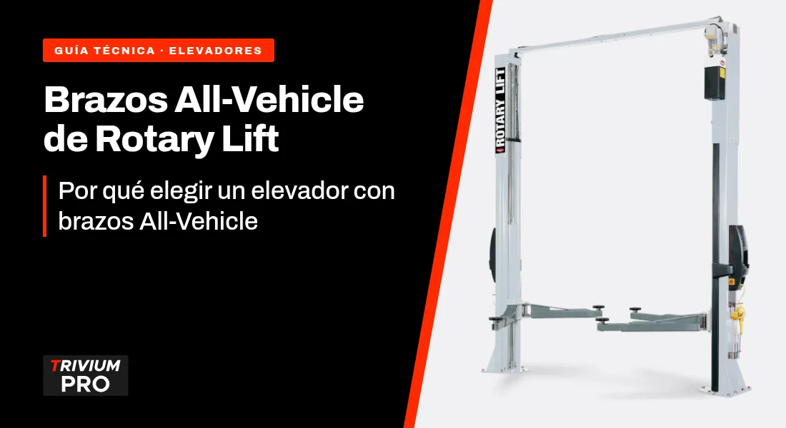

En el mundo del servicio automotriz, cada centímetro cuenta. Cuando hablamos de eficiencia, versatilidad y seguridad en el trabajo, los brazos del elevador son un componente clave. Rotary Lift, líder mundial en tecnología de elevación, ha desarrollado una solución innovadora con su diseño All-Vehicle Arm (brazo para todo tipo de vehículos), y en este artículo te contamos por qué representa una verdadera ventaja competitiva para cualquier taller.
✅ Mayor alcance: +21% que los brazos tradicionales
Gracias a su diseño optimizado, los brazos All-Vehicle ofrecen un 21% más de alcance que los brazos tradicionales de 3 etapas con adaptadores roscados. Esto permite levantar una gama más amplia de vehículos, desde autos compactos hasta pickups y camionetas de gran porte, sin necesidad de cambiar adaptadores ni recurrir a soluciones improvisadas.

✅ Barrido de brazo un 30% más amplio
Comparado con los brazos convencionales de 2 etapas con adaptadores rebatibles, este diseño patentado ofrece un 30% más de cobertura de barrido. Esto significa que podrás posicionar los brazos de forma más rápida y precisa, incluso en vehículos con puntos de apoyo difíciles o chasis irregulares.

✅ Rango de retracción más corto del mercado
Los brazos delanteros tienen una retracción mínima de apenas 18 1/2″ (47 cm), lo que los convierte en los más compactos del mercado. Esto facilita el acceso a vehículos pequeños o deportivos sin comprometer la estabilidad ni la seguridad.

✅ Área de recogida más grande del mercado
Con un alcance máximo de 58 1/4″ (1,48 m) en los brazos traseros y 41″ (1,04 m) en los delanteros, este sistema ofrece la mayor área de recogida disponible. Esto permite una cobertura completa para levantar vehículos de gran tamaño sin cambiar de equipo.
✅ Diseño patentado para ajuste más sencillo
El diseño cónico de alta resistencia no solo mejora la durabilidad, sino que también facilita el posicionamiento rápido del adaptador en el punto de apoyo del vehículo. Además, su estructura simplificada permite un ajuste fino con menos esfuerzo, agilizando el trabajo diario y reduciendo el margen de error.
En resumen: el elevador que no te obliga a decir que no
Con los brazos All-Vehicle de Rotary Lift, tu taller estará preparado para levantar prácticamente cualquier vehículo que entre por la puerta. No vas a perder más trabajos por limitaciones de equipo. Vas a ganar tiempo, seguridad, eficiencia… y clientes satisfechos.
🚗 ¿Querés ver cómo trabajan estos elevadores en la práctica? Contactanos y pedinos fotos reales de nuestras instalaciones o una demo técnica.